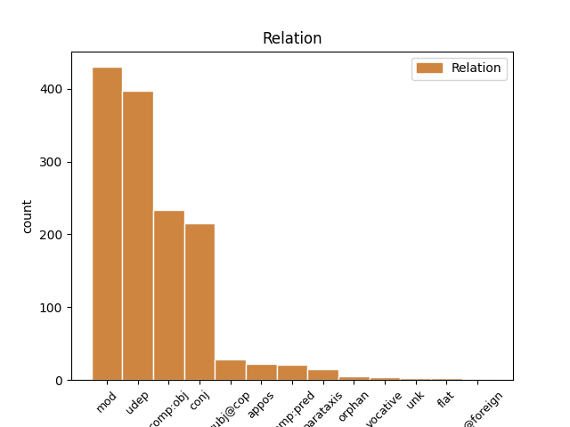
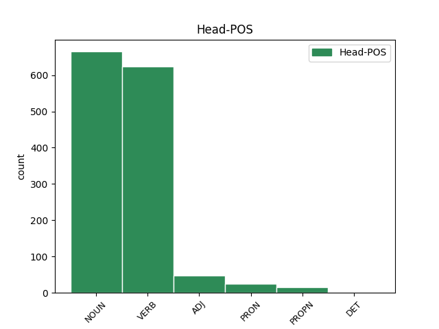
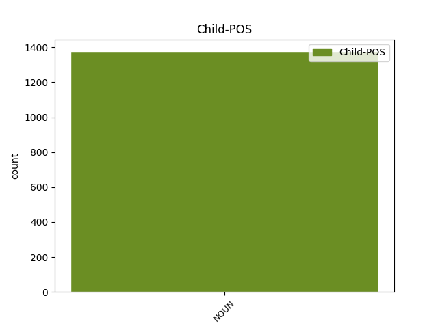

Distribution of features within this leaf



Agreement Rules sorted by frequency.
- When the dependent token is the modifer(mod) of the head token, and the head token is NOUN and the dependent token is NOUN.
1 Telefon _ _ _ _ 0 _ _ _
2 on _ _ _ _ 0 _ _ _
3 isegi _ _ _ _ 0 _ _ _
4 korra _ _ _ _ 0 _ _ _
5 softi soft NOUN S Case=Gen|Number=Sing 6 mod _ _
6 teemaga teema NOUN S Case=Com|Number=Sing 0 _ _ _
7 garantiis _ _ _ _ 0 _ _ _
8 käinud _ _ _ _ 0 _ _ _
9 aga _ _ _ _ 0 _ _ _
10 mitte _ _ _ _ 0 _ _ _
11 miskit _ _ _ _ 0 _ _ _
12 seoses _ _ _ _ 0 _ _ _
13 selle _ _ _ _ 0 _ _ _
14 krõbinaga _ _ _ _ 0 _ _ _
15 . _ _ _ _ 0 _ _ _
1 Lisaks lisa NOUN S Case=Tra|Number=Sing 2 udep _ _
2 on olema VERB V Mood=Ind|Number=Sing|Person=3|Tense=Pres|VerbForm=Fin|Voice=Act 0 _ _ _
3 asju _ _ _ _ 0 _ _ _
4 mida _ _ _ _ 0 _ _ _
5 lõpptestides _ _ _ _ 0 _ _ _
6 kinni _ _ _ _ 0 _ _ _
7 ei _ _ _ _ 0 _ _ _
8 võeta _ _ _ _ 0 _ _ _
9 ja _ _ _ _ 0 _ _ _
10 tulevad _ _ _ _ 0 _ _ _
11 välja _ _ _ _ 0 _ _ _
12 mingi _ _ _ _ 0 _ _ _
13 aja _ _ _ _ 0 _ _ _
14 jooksul _ _ _ _ 0 _ _ _
15 kasutades _ _ _ _ 0 _ _ _
16 . _ _ _ _ 0 _ _ _
1 Tunnista _ _ _ _ 0 _ _ _
2 fronius _ _ _ _ 0 _ _ _
3 , _ _ _ _ 0 _ _ _
4 et _ _ _ _ 0 _ _ _
5 võta võtma VERB V Mood=Imp|Number=Sing|Person=2|Tense=Pres|VerbForm=Fin|Voice=Act 0 _ _ _
6 mis _ _ _ _ 0 _ _ _
7 klots klots NOUN S Case=Nom|Number=Sing 5 comp:obj _ _
8 tahes _ _ _ _ 0 _ _ _
9 kuid _ _ _ _ 0 _ _ _
10 ühest _ _ _ _ 0 _ _ _
11 nurgast _ _ _ _ 0 _ _ _
12 on _ _ _ _ 0 _ _ _
13 nad _ _ _ _ 0 _ _ _
14 kõik _ _ _ _ 0 _ _ _
15 pahnad _ _ _ _ 0 _ _ _
16 :D _ _ _ _ 0 _ _ _
1 tehakse _ _ _ _ 0 _ _ _
2 midagi _ _ _ _ 0 _ _ _
3 ja _ _ _ _ 0 _ _ _
4 suurem _ _ _ _ 0 _ _ _
5 osa _ _ _ _ 0 _ _ _
6 neist _ _ _ _ 0 _ _ _
7 lähevad _ _ _ _ 0 _ _ _
8 karpi karp NOUN S Case=Ill|Number=Sing 0 _ _ _
9 ja _ _ _ _ 0 _ _ _
10 letile lett NOUN S Case=All|Number=Sing 8 conj _ SpaceAfter=No
11 . _ _ _ _ 0 _ _ _
1 Aga _ _ _ _ 0 _ _ _
2 ega _ _ _ _ 0 _ _ _
3 see _ _ _ _ 0 _ _ _
4 ei _ _ _ _ 0 _ _ _
5 ole _ _ _ _ 0 _ _ _
6 100 _ _ _ _ 0 _ _ _
7 % _ _ _ _ 0 _ _ _
8 kriimu kriim NOUN S Case=Gen|Number=Sing 9 udep _ _
9 kindel kindel ADJ A Case=Nom|Degree=Pos|Number=Sing 0 _ _ _
1 Milleks _ _ _ _ 0 _ _ _
2 oletada _ _ _ _ 0 _ _ _
3 , _ _ _ _ 0 _ _ _
4 keda _ _ _ _ 0 _ _ _
5 Jumal _ _ _ _ 0 _ _ _
6 kasutab kasutama VERB V Mood=Ind|Number=Sing|Person=3|Tense=Pres|VerbForm=Fin|Voice=Act 0 _ _ _
7 kellegi _ _ _ _ 0 _ _ _
8 vitsaks vits NOUN S Case=Tra|Number=Sing 6 comp:pred _ SpaceAfter=No
9 . _ _ _ _ 0 _ _ _
1 Telklaager telk_laager NOUN S Case=Nom|Number=Sing 0 _ _ _
2 Rock rock NOUN S Case=Nom|Number=Sing 1 appos _ _
3 Ramp _ _ _ _ 0 _ _ _
4 2012 _ _ _ _ 0 _ _ _
5 on _ _ _ _ 0 _ _ _
6 korrtaldatud _ _ _ _ 0 _ _ _
7 telklaager _ _ _ _ 0 _ _ _
8 . _ _ _ _ 0 _ _ _
1 Gorilla _ _ _ _ 0 _ _ _
2 klaas _ _ _ _ 0 _ _ _
3 pn _ _ _ _ 0 _ _ _
4 eesti _ _ _ _ 0 _ _ _
5 keeles keel NOUN S Case=Ine|Number=Sing 7 udep _ _
6 katastatud _ _ _ _ 0 _ _ _
7 klaas klaas NOUN S Case=Nom|Number=Sing 0 _ _ _
8 . _ _ _ _ 0 _ _ _
1 Lisaks _ _ _ _ 0 _ _ _
2 tulid _ _ _ _ 0 _ _ _
3 mälu _ _ _ _ 0 _ _ _
4 värskendama _ _ _ _ 0 _ _ _
5 ka _ _ _ _ 0 _ _ _
6 paar _ _ _ _ 0 _ _ _
7 üliõpilast _ _ _ _ 0 _ _ _
8 , _ _ _ _ 0 _ _ _
9 kel kes PRON P Case=Ade|Number=Sing|PronType=Int,Rel 0 _ _ _
10 soov soov NOUN S Case=Nom|Number=Sing 9 subj@cop _ _
11 taas _ _ _ _ 0 _ _ _
12 töötavast _ _ _ _ 0 _ _ _
13 lennukist _ _ _ _ 0 _ _ _
14 väljuda _ _ _ _ 0 _ _ _
15 . _ _ _ _ 0 _ _ _
1 Kas _ _ _ _ 0 _ _ _
2 telkla _ _ _ _ 0 _ _ _
3 tuleb tulema VERB V Mood=Ind|Number=Sing|Person=3|Tense=Pres|VerbForm=Fin|Voice=Act 0 _ _ _
4 ikkagi _ _ _ _ 0 _ _ _
5 kooli _ _ _ _ 0 _ _ _
6 õuele _ _ _ _ 0 _ _ _
7 , _ _ _ _ 0 _ _ _
8 nagu _ _ _ _ 0 _ _ _
9 kaardil _ _ _ _ 0 _ _ _
10 näidatud _ _ _ _ 0 _ _ _
11 või _ _ _ _ 0 _ _ _
12 Tasuja _ _ _ _ 0 _ _ _
13 platsile plats NOUN S Case=All|Number=Sing 3 conj _ _
1 ma _ _ _ _ 0 _ _ _
2 spets _ _ _ _ 0 _ _ _
3 lõpetasin _ _ _ _ 0 _ _ _
4 ülejäänud _ _ _ _ 0 _ _ _
5 jutu _ _ _ _ 0 _ _ _
6 sirvimise _ _ _ _ 0 _ _ _
7 ja _ _ _ _ 0 _ _ _
8 seost _ _ _ _ 0 _ _ _
9 ikka _ _ _ _ 0 _ _ _
10 ei _ _ _ _ 0 _ _ _
11 leidnud _ _ _ _ 0 _ _ _
12 - _ _ _ _ 0 _ _ _
13 üks _ _ _ _ 0 _ _ _
14 ütleb _ _ _ _ 0 _ _ _
15 et _ _ _ _ 0 _ _ _
16 levi levi NOUN S Case=Nom|Number=Sing 17 subj@cop _ _
17 kehv kehv ADJ A Case=Nom|Degree=Pos|Number=Sing 0 _ _ _
18 ja _ _ _ _ 0 _ _ _
19 siis _ _ _ _ 0 _ _ _
20 vastuseks _ _ _ _ 0 _ _ _
21 " _ _ _ _ 0 _ _ _
22 selliset _ _ _ _ 0 _ _ _
23 ja _ _ _ _ 0 _ _ _
24 muude _ _ _ _ 0 _ _ _
25 jamade _ _ _ _ 0 _ _ _
26 pärast _ _ _ _ 0 _ _ _
27 . _ _ _ _ 0 _ _ _
28 . _ _ _ _ 0 _ _ _
29 . _ _ _ _ 0 _ _ _
30 . _ _ _ _ 0 _ _ _
31 " _ _ _ _ 0 _ _ _
1 Tasuline _ _ _ _ 0 _ _ _
2 parkimine _ _ _ _ 0 _ _ _
3 on _ _ _ _ 0 _ _ _
4 tööpäevadel _ _ _ _ 0 _ _ _
5 kuni _ _ _ _ 0 _ _ _
6 kell _ _ _ _ 0 _ _ _
7 16.00 _ _ _ _ 0 _ _ _
8 ( _ _ _ _ 0 _ _ _
9 märgistatult _ _ _ _ 0 _ _ _
10 2 _ _ _ _ 0 _ _ _
11 tundi tund NOUN S Case=Par|Number=Sing 12 subj@cop _ _
12 tasuta tasu NOUN S Case=Abe|Number=Sing 0 _ _ _
13 ) _ _ _ _ 0 _ _ _
14 . _ _ _ _ 0 _ _ _
1 Ei _ _ _ _ 0 _ _ _
2 ole _ _ _ _ 0 _ _ _
3 mures _ _ _ _ 0 _ _ _
4 , _ _ _ _ 0 _ _ _
5 lihtsalt _ _ _ _ 0 _ _ _
6 üllatav _ _ _ _ 0 _ _ _
7 tähele _ _ _ _ 0 _ _ _
8 panek panek NOUN S Case=Nom|Number=Sing 0 _ _ _
9 - _ _ _ _ 0 _ _ _
10 selline _ _ _ _ 0 _ _ _
11 püss püss NOUN S Case=Nom|Number=Sing 8 parataxis _ SpaceAfter=No
12 , _ _ _ _ 0 _ _ _
13 selline _ _ _ _ 0 _ _ _
14 piibel _ _ _ _ 0 _ _ _
15 ja _ _ _ _ 0 _ _ _
16 astus _ _ _ _ 0 _ _ _
17 ämbrisse _ _ _ _ 0 _ _ _
18 kuna _ _ _ _ 0 _ _ _
19 üks _ _ _ _ 0 _ _ _
20 kruvi _ _ _ _ 0 _ _ _
21 jäi _ _ _ _ 0 _ _ _
22 panematta _ _ _ _ 0 _ _ _
23 ja _ _ _ _ 0 _ _ _
24 nüüd _ _ _ _ 0 _ _ _
25 kõriseb _ _ _ _ 0 _ _ _
26 . _ _ _ _ 0 _ _ _
1 Kohe _ _ _ _ 0 _ _ _
2 tuleb tulema VERB V Mood=Ind|Number=Sing|Person=3|Tense=Pres|VerbForm=Fin|Voice=Act 0 _ _ _
3 päikese _ _ _ _ 0 _ _ _
4 torm _ _ _ _ 0 _ _ _
5 ja _ _ _ _ 0 _ _ _
6 siis _ _ _ _ 0 _ _ _
7 hakkame _ _ _ _ 0 _ _ _
8 soomlastega _ _ _ _ 0 _ _ _
9 võistlema _ _ _ _ 0 _ _ _
10 telefoni _ _ _ _ 0 _ _ _
11 heitmises _ _ _ _ 0 _ _ _
12 ( _ _ _ _ 0 _ _ _
13 teatavasti _ _ _ _ 0 _ _ _
14 selline _ _ _ _ 0 _ _ _
15 ala ala NOUN S Case=Nom|Number=Sing 2 parataxis _ _
16 soomes _ _ _ _ 0 _ _ _
17 spordis _ _ _ _ 0 _ _ _
18 olemas _ _ _ _ 0 _ _ _
19 :D _ _ _ _ 0 _ _ _
20 ) _ _ _ _ 0 _ _ _
1 Tekkis _ _ _ _ 0 _ _ _
2 küsimus _ _ _ _ 0 _ _ _
3 , _ _ _ _ 0 _ _ _
4 et _ _ _ _ 0 _ _ _
5 kas _ _ _ _ 0 _ _ _
6 see _ _ _ _ 0 _ _ _
7 aasta _ _ _ _ 0 _ _ _
8 on _ _ _ _ 0 _ _ _
9 ka _ _ _ _ 0 _ _ _
10 sedasi _ _ _ _ 0 _ _ _
11 , _ _ _ _ 0 _ _ _
12 et _ _ _ _ 0 _ _ _
13 sitamaja _ _ _ _ 0 _ _ _
14 ja _ _ _ _ 0 _ _ _
15 söökla _ _ _ _ 0 _ _ _
16 asuvad _ _ _ _ 0 _ _ _
17 körvuti _ _ _ _ 0 _ _ _
18 ? _ _ _ _ 0 _ _ _
19 , _ _ _ _ 0 _ _ _
20 st _ _ _ _ 0 _ _ _
21 et _ _ _ _ 0 _ _ _
22 kui _ _ _ _ 0 _ _ _
23 öhtul _ _ _ _ 0 _ _ _
24 midagi miski PRON P Case=Par|Number=Sing|PronType=Ind 0 _ _ _
25 närimist närimine NOUN S Case=Par|Number=Sing 24 mod _ _
26 vötta _ _ _ _ 0 _ _ _
27 seal _ _ _ _ 0 _ _ _
28 toiduputkade _ _ _ _ 0 _ _ _
29 juures _ _ _ _ 0 _ _ _
30 ning _ _ _ _ 0 _ _ _
31 keegi _ _ _ _ 0 _ _ _
32 juhtub _ _ _ _ 0 _ _ _
33 peldiku _ _ _ _ 0 _ _ _
34 ust _ _ _ _ 0 _ _ _
35 avama _ _ _ _ 0 _ _ _
36 siis _ _ _ _ 0 _ _ _
37 hullem _ _ _ _ 0 _ _ _
38 lebra _ _ _ _ 0 _ _ _
39 üleval _ _ _ _ 0 _ _ _
40 ? _ _ _ _ 0 _ _ _
1 Krõbin _ _ _ _ 0 _ _ _
2 kül _ _ _ _ 0 _ _ _
3 ei _ _ _ _ 0 _ _ _
4 ole _ _ _ _ 0 _ _ _
5 normaalne _ _ _ _ 0 _ _ _
6 ... _ _ _ _ 0 _ _ _
7 kui _ _ _ _ 0 _ _ _
8 samsungi samsung PROPN S Case=Gen|Number=Sing 0 _ _ _
9 ja _ _ _ _ 0 _ _ _
10 ifööno ifööno NOUN S Case=Gen|Number=Sing 8 conj _ _
11 mehed _ _ _ _ 0 _ _ _
12 seda _ _ _ _ 0 _ _ _
13 normaalseks _ _ _ _ 0 _ _ _
14 peavad _ _ _ _ 0 _ _ _
15 siis _ _ _ _ 0 _ _ _
16 edu _ _ _ _ 0 _ _ _
17 teile _ _ _ _ 0 _ _ _
18 . _ _ _ _ 0 _ _ _
1 Ta _ _ _ _ 0 _ _ _
2 vajab _ _ _ _ 0 _ _ _
3 selleks _ _ _ _ 0 _ _ _
4 , _ _ _ _ 0 _ _ _
5 et _ _ _ _ 0 _ _ _
6 siin _ _ _ _ 0 _ _ _
7 viia _ _ _ _ 0 _ _ _
8 täide _ _ _ _ 0 _ _ _
9 oma _ _ _ _ 0 _ _ _
10 plaani _ _ _ _ 0 _ _ _
11 meie mina PRON P Case=Gen|Number=Plur|Person=1|PronType=Prs 0 _ _ _
12 ( _ _ _ _ 0 _ _ _
13 kristlaste kristlane NOUN S Case=Gen|Number=Plur 11 appos _ SpaceAfter=No
14 ) _ _ _ _ 0 _ _ _
15 eestpalveid _ _ _ _ 0 _ _ _
16 , _ _ _ _ 0 _ _ _
17 palveid _ _ _ _ 0 _ _ _
18 , _ _ _ _ 0 _ _ _
19 küllakutseid _ _ _ _ 0 _ _ _
20 ! _ _ _ _ 0 _ _ _
1 " _ _ _ _ 0 _ _ _
2 Ajaxi _ _ _ _ 0 _ _ _
3 laul _ _ _ _ 0 _ _ _
4 - _ _ _ _ 0 _ _ _
5 carmen _ _ _ _ 0 _ _ _
6 , _ _ _ _ 0 _ _ _
7 ajaxi _ _ _ _ 0 _ _ _
8 laul laul NOUN S Case=Nom|Number=Sing 10 subj@cop _ _
9 - _ _ _ _ 0 _ _ _
10 carmen Carmen PROPN S Case=Nom|Number=Sing 0 _ _ _
11 , _ _ _ _ 0 _ _ _
12 " _ _ _ _ 0 _ _ _
13 korrutas _ _ _ _ 0 _ _ _
14 ta _ _ _ _ 0 _ _ _
15 endamisi _ _ _ _ 0 _ _ _
16 " _ _ _ _ 0 _ _ _
17 Sepapoisid _ _ _ _ 0 _ _ _
18 - _ _ _ _ 0 _ _ _
19 oota _ _ _ _ 0 _ _ _
20 , _ _ _ _ 0 _ _ _
21 mis _ _ _ _ 0 _ _ _
22 kurat _ _ _ _ 0 _ _ _
23 see _ _ _ _ 0 _ _ _
24 sepapoisid _ _ _ _ 0 _ _ _
25 nyyd _ _ _ _ 0 _ _ _
26 oligi _ _ _ _ 0 _ _ _
27 .. _ _ _ _ 0 _ _ _
28 , _ _ _ _ 0 _ _ _
29 " _ _ _ _ 0 _ _ _
30 kui _ _ _ _ 0 _ _ _
31 järsku _ _ _ _ 0 _ _ _
32 juhtus _ _ _ _ 0 _ _ _
33 midagi _ _ _ _ 0 _ _ _
34 imelikku _ _ _ _ 0 _ _ _
35 . _ _ _ _ 0 _ _ _
1 Meenuvad _ _ _ _ 0 _ _ _
2 sõnad _ _ _ _ 0 _ _ _
3 , _ _ _ _ 0 _ _ _
4 tõuse tõusma VERB V Mood=Imp|Number=Sing|Person=2|Tense=Pres|VerbForm=Fin|Voice=Act 0 _ _ _
5 Jumal jumal NOUN S Case=Nom|Number=Sing 4 vocative _ SpaceAfter=No
6 , _ _ _ _ 0 _ _ _
7 vaata _ _ _ _ 0 _ _ _
8 oma _ _ _ _ 0 _ _ _
9 kogudusele _ _ _ _ 0 _ _ _
10 - _ _ _ _ 0 _ _ _
11 Kristuse _ _ _ _ 0 _ _ _
12 Ihule _ _ _ _ 0 _ _ _
13 ! _ _ _ _ 0 _ _ _
1 See _ _ _ _ 0 _ _ _
2 hoor _ _ _ _ 0 _ _ _
3 on _ _ _ _ 0 _ _ _
4 langenud _ _ _ _ 0 _ _ _
5 kirik _ _ _ _ 0 _ _ _
6 või _ _ _ _ 0 _ _ _
7 mõningate _ _ _ _ 0 _ _ _
8 lõpuaegasid lõpu_aeg NOUN S Case=Par|Number=Plur 9 comp:obj _ _
9 käsitlevate käsitlev ADJ A Case=Gen|Degree=Pos|Number=Plur|Tense=Pres|VerbForm=Part|Voice=Act 0 _ _ _
10 piibliõpetajate _ _ _ _ 0 _ _ _
11 - _ _ _ _ 0 _ _ _
12 jutustajate _ _ _ _ 0 _ _ _
13 arvates _ _ _ _ 0 _ _ _
14 euroopa _ _ _ _ 0 _ _ _
15 ja _ _ _ _ 0 _ _ _
16 Sõnna _ _ _ _ 0 _ _ _
17 kes _ _ _ _ 0 _ _ _
18 teda _ _ _ _ 0 _ _ _
19 ära _ _ _ _ 0 _ _ _
20 kasutab _ _ _ _ 0 _ _ _
21 on _ _ _ _ 0 _ _ _
22 islam _ _ _ _ 0 _ _ _
23 . _ _ _ _ 0 _ _ _
1 Natuke _ _ _ _ 0 _ _ _
2 hiljem _ _ _ _ 0 _ _ _
3 , _ _ _ _ 0 _ _ _
4 kui _ _ _ _ 0 _ _ _
5 arvutis _ _ _ _ 0 _ _ _
6 juba _ _ _ _ 0 _ _ _
7 rahulikumaks _ _ _ _ 0 _ _ _
8 oli _ _ _ _ 0 _ _ _
9 läinud _ _ _ _ 0 _ _ _
10 , _ _ _ _ 0 _ _ _
11 tuli _ _ _ _ 0 _ _ _
12 Kazaa Kazaa PROPN S Case=Nom|Number=Sing 0 _ _ _
13 , _ _ _ _ 0 _ _ _
14 teada-tuntud _ _ _ _ 0 _ _ _
15 puhtusehull puhtuse_hull NOUN S Case=Nom|Number=Sing 12 appos _ _
16 ja _ _ _ _ 0 _ _ _
17 yritas _ _ _ _ 0 _ _ _
18 seda _ _ _ _ 0 _ _ _
19 sigadust _ _ _ _ 0 _ _ _
20 natuke _ _ _ _ 0 _ _ _
21 koristada _ _ _ _ 0 _ _ _
22 , _ _ _ _ 0 _ _ _
23 aga _ _ _ _ 0 _ _ _
24 peagi _ _ _ _ 0 _ _ _
25 lõi _ _ _ _ 0 _ _ _
26 ka _ _ _ _ 0 _ _ _
27 tema _ _ _ _ 0 _ _ _
28 käega _ _ _ _ 0 _ _ _
29 ja _ _ _ _ 0 _ _ _
30 ronis _ _ _ _ 0 _ _ _
31 oma _ _ _ _ 0 _ _ _
32 urgu _ _ _ _ 0 _ _ _
33 tagasi _ _ _ _ 0 _ _ _
34 - _ _ _ _ 0 _ _ _
35 pole _ _ _ _ 0 _ _ _
36 nende _ _ _ _ 0 _ _ _
37 mp3-dega _ _ _ _ 0 _ _ _
38 vaja _ _ _ _ 0 _ _ _
39 jamada _ _ _ _ 0 _ _ _
40 midagi _ _ _ _ 0 _ _ _
41 . _ _ _ _ 0 _ _ _
1 Koolitus _ _ _ _ 0 _ _ _
2 kestis _ _ _ _ 0 _ _ _
3 ligikaudu _ _ _ _ 0 _ _ _
4 3 _ _ _ _ 0 _ _ _
5 ja _ _ _ _ 0 _ _ _
6 pool _ _ _ _ 0 _ _ _
7 tundi _ _ _ _ 0 _ _ _
8 ning _ _ _ _ 0 _ _ _
9 kõik _ _ _ _ 0 _ _ _
10 said _ _ _ _ 0 _ _ _
11 proovida _ _ _ _ 0 _ _ _
12 , _ _ _ _ 0 _ _ _
13 mis _ _ _ _ 0 _ _ _
14 tunne _ _ _ _ 0 _ _ _
15 on _ _ _ _ 0 _ _ _
16 varju _ _ _ _ 0 _ _ _
17 seljas _ _ _ _ 0 _ _ _
18 kanda _ _ _ _ 0 _ _ _
19 , _ _ _ _ 0 _ _ _
20 kuidas _ _ _ _ 0 _ _ _
21 tehakse _ _ _ _ 0 _ _ _
22 daisy daisy NOUN S Case=Gen|Number=Sing 0 _ _ _
23 chaini chain NOUN S Case=Par|Number=Sing 22 flat _ _
24 ning _ _ _ _ 0 _ _ _
25 näha _ _ _ _ 0 _ _ _
26 seda _ _ _ _ 0 _ _ _
27 , _ _ _ _ 0 _ _ _
28 mida _ _ _ _ 0 _ _ _
29 õhus _ _ _ _ 0 _ _ _
30 olles _ _ _ _ 0 _ _ _
31 keegi _ _ _ _ 0 _ _ _
32 näha _ _ _ _ 0 _ _ _
33 ei _ _ _ _ 0 _ _ _
34 soovi _ _ _ _ 0 _ _ _
35 – _ _ _ _ 0 _ _ _
36 varuvarju _ _ _ _ 0 _ _ _
37 . _ _ _ _ 0 _ _ _
1 Viimase _ _ _ _ 0 _ _ _
2 puudumine _ _ _ _ 0 _ _ _
3 soodustab _ _ _ _ 0 _ _ _
4 pigem _ _ _ _ 0 _ _ _
5 taandarengut _ _ _ _ 0 _ _ _
6 , _ _ _ _ 0 _ _ _
7 ega _ _ _ _ 0 _ _ _
8 me _ _ _ _ 0 _ _ _
9 ju _ _ _ _ 0 _ _ _
10 ise _ _ _ _ 0 _ _ _
11 ei _ _ _ _ 0 _ _ _
12 suuda _ _ _ _ 0 _ _ _
13 ei _ _ _ _ 0 _ _ _
14 ennast ise PRON P Case=Par|Number=Sing|PronType=Prs|Reflex=Yes 0 _ _ _
15 ega _ _ _ _ 0 _ _ _
16 hobust hobune NOUN S Case=Par|Number=Sing 14 conj _ _
17 objektiivselt _ _ _ _ 0 _ _ _
18 hinnata _ _ _ _ 0 _ _ _
19 . _ _ _ _ 0 _ _ _
1 Nii _ _ _ _ 0 _ _ _
2 vast _ _ _ _ 0 _ _ _
3 lihtsam _ _ _ _ 0 _ _ _
4 seda _ _ _ _ 0 _ _ _
5 asja asi NOUN S Case=Par|Number=Sing 6 comp:obj _ _
6 orgunnida orgunnida NOUN S Case=Nom|Number=Sing 0 _ _ _
7 . _ _ _ _ 0 _ _ _
1 Me _ _ _ _ 0 _ _ _
2 kõik _ _ _ _ 0 _ _ _
3 loome _ _ _ _ 0 _ _ _
4 ise _ _ _ _ 0 _ _ _
5 oma _ _ _ _ 0 _ _ _
6 elu _ _ _ _ 0 _ _ _
7 ja _ _ _ _ 0 _ _ _
8 seda see PRON P Case=Par|Number=Sing|PronType=Dem 0 _ _ _
9 iga _ _ _ _ 0 _ _ _
10 päev päev NOUN S Case=Nom|Number=Sing 8 orphan _ SpaceAfter=No
11 . _ _ _ _ 0 _ _ _
1 ( _ _ _ _ 0 _ _ _
2 parandus _ _ _ _ 0 _ _ _
3 õige õige ADJ A Case=Nom|Degree=Pos|Number=Sing 0 _ _ _
4 . _ _ _ _ 0 _ _ _
5 toim. toim NOUN S Case=Nom|Number=Sing 3 parataxis _ SpaceAfter=No
6 ) _ _ _ _ 0 _ _ _
1 Kisub _ _ _ _ 0 _ _ _
2 sauna _ _ _ _ 0 _ _ _
3 teemaga teema NOUN S Case=Com|Number=Sing 4 udep _ _
4 samasse sama DET P Case=Ill|Number=Sing|PronType=Dem 0 _ _ _
5 valdkonda _ _ _ _ 0 _ _ _
6 - _ _ _ _ 0 _ _ _
7 ei _ _ _ _ 0 _ _ _
8 saa _ _ _ _ 0 _ _ _
9 foorumit _ _ _ _ 0 _ _ _
10 kokku _ _ _ _ 0 _ _ _
11 , _ _ _ _ 0 _ _ _
12 et _ _ _ _ 0 _ _ _
13 midagi _ _ _ _ 0 _ _ _
14 toimuks _ _ _ _ 0 _ _ _
15 . _ _ _ _ 0 _ _ _
1 Seega _ _ _ _ 0 _ _ _
2 justkui _ _ _ _ 0 _ _ _
3 saaksid _ _ _ _ 0 _ _ _
4 peale _ _ _ _ 0 _ _ _
5 end _ _ _ _ 0 _ _ _
6 kristlasteks kristlane NOUN S Case=Tra|Number=Plur 7 comp:pred _ _
7 pidavate pidav ADJ A Case=Gen|Degree=Pos|Number=Plur|Tense=Pres|VerbForm=Part|Voice=Act 0 _ _ _
8 ka _ _ _ _ 0 _ _ _
9 teised _ _ _ _ 0 _ _ _
10 enesepetuse _ _ _ _ 0 _ _ _
11 korras _ _ _ _ 0 _ _ _
12 põhjendada _ _ _ _ 0 _ _ _
13 , _ _ _ _ 0 _ _ _
14 mispärast _ _ _ _ 0 _ _ _
15 ikkagi _ _ _ _ 0 _ _ _
16 jõulude _ _ _ _ 0 _ _ _
17 sisulist _ _ _ _ 0 _ _ _
18 sõnumit _ _ _ _ 0 _ _ _
19 kuulda _ _ _ _ 0 _ _ _
20 võetakse _ _ _ _ 0 _ _ _
21 : _ _ _ _ 0 _ _ _
22 osta _ _ _ _ 0 _ _ _
23 , _ _ _ _ 0 _ _ _
24 osta _ _ _ _ 0 _ _ _
25 ja _ _ _ _ 0 _ _ _
26 veel _ _ _ _ 0 _ _ _
27 kord _ _ _ _ 0 _ _ _
28 osta _ _ _ _ 0 _ _ _
29 ! _ _ _ _ 0 _ _ _
1 Mul _ _ _ _ 0 _ _ _
2 pole _ _ _ _ 0 _ _ _
3 eriti _ _ _ _ 0 _ _ _
4 teisi _ _ _ _ 0 _ _ _
5 sõpru _ _ _ _ 0 _ _ _
6 , _ _ _ _ 0 _ _ _
7 siis _ _ _ _ 0 _ _ _
8 nad _ _ _ _ 0 _ _ _
9 hakkavad _ _ _ _ 0 _ _ _
10 jah _ _ _ _ 0 _ _ _
11 veel _ _ _ _ 0 _ _ _
12 rohkem _ _ _ _ 0 _ _ _
13 taga _ _ _ _ 0 _ _ _
14 rääkima _ _ _ _ 0 _ _ _
15 ju _ _ _ _ 0 _ _ _
16 see _ _ _ _ 0 _ _ _
17 üks _ _ _ _ 0 _ _ _
18 kellega kes PRON P Case=Com|Number=Sing|PronType=Int,Rel 0 _ _ _
19 mul _ _ _ _ 0 _ _ _
20 oma _ _ _ _ 0 _ _ _
21 arust aru NOUN S Case=Ela|Number=Sing 18 udep _ _
22 olid _ _ _ _ 0 _ _ _
23 normid _ _ _ _ 0 _ _ _
24 suhted _ _ _ _ 0 _ _ _
25 eks _ _ _ _ 0 _ _ _
26 , _ _ _ _ 0 _ _ _
27 siis _ _ _ _ 0 _ _ _
28 ta _ _ _ _ 0 _ _ _
29 mingi _ _ _ _ 0 _ _ _
30 msnis _ _ _ _ 0 _ _ _
31 : _ _ _ _ 0 _ _ _
32 Sa _ _ _ _ 0 _ _ _
33 oled _ _ _ _ 0 _ _ _
34 ikka _ _ _ _ 0 _ _ _
35 nii _ _ _ _ 0 _ _ _
36 beibeks _ _ _ _ 0 _ _ _
37 muutunud _ _ _ _ 0 _ _ _
38 mai _ _ _ _ 0 _ _ _
39 tia _ _ _ _ 0 _ _ _
40 , _ _ _ _ 0 _ _ _
41 see _ _ _ _ 0 _ _ _
42 on _ _ _ _ 0 _ _ _
43 nii _ _ _ _ 0 _ _ _
44 vastik _ _ _ _ 0 _ _ _
45 ! _ _ _ _ 0 _ _ _
46 ! _ _ _ _ 0 _ _ _
47 ! _ _ _ _ 0 _ _ _
48 ! _ _ _ _ 0 _ _ _
49 ! _ _ _ _ 0 _ _ _
50 ! _ _ _ _ 0 _ _ _
51 ! _ _ _ _ 0 _ _ _
52 ! _ _ _ _ 0 _ _ _
1 Maksame _ _ _ _ 0 _ _ _
2 prügi _ _ _ _ 0 _ _ _
3 eest _ _ _ _ 0 _ _ _
4 mitu _ _ _ _ 0 _ _ _
5 korda _ _ _ _ 0 _ _ _
6 , _ _ _ _ 0 _ _ _
7 ka _ _ _ _ 0 _ _ _
8 kaäibemaksu käibe_maks NOUN S Case=Par|Number=Sing 0 _ _ _
9 mitu _ _ _ _ 0 _ _ _
10 korda kord NOUN S Case=Par|Number=Sing 8 orphan _ SpaceAfter=No
11 . _ _ _ _ 0 _ _ _
1 Algatuseks algatus NOUN S Case=Tra|Number=Sing 5 comp:pred _ _
2 kasvõi _ _ _ _ 0 _ _ _
3 mõne _ _ _ _ 0 _ _ _
4 playlisti _ _ _ _ 0 _ _ _
5 faili fail NOUN S Case=Gen|Number=Sing 0 _ _ _
6 . _ _ _ _ 0 _ _ _
1 Eilseks eilne ADJ A Case=Tra|Degree=Pos|Number=Sing 0 _ _ _
2 , _ _ _ _ 0 _ _ _
3 6. _ _ _ _ 0 _ _ _
4 detsembriks detsember NOUN S Case=Tra|Number=Sing 1 appos _ _
5 kutsus _ _ _ _ 0 _ _ _
6 Eesti _ _ _ _ 0 _ _ _
7 Lennuakadeemia _ _ _ _ 0 _ _ _
8 Üliõpilasesindus _ _ _ _ 0 _ _ _
9 koolile _ _ _ _ 0 _ _ _
10 külla _ _ _ _ 0 _ _ _
11 Tartu _ _ _ _ 0 _ _ _
12 Verekeskuse _ _ _ _ 0 _ _ _
13 , _ _ _ _ 0 _ _ _
14 et _ _ _ _ 0 _ _ _
15 kool _ _ _ _ 0 _ _ _
16 saaks _ _ _ _ 0 _ _ _
17 anda _ _ _ _ 0 _ _ _
18 oma _ _ _ _ 0 _ _ _
19 panuse _ _ _ _ 0 _ _ _
20 vereloovutamisel _ _ _ _ 0 _ _ _
21 . _ _ _ _ 0 _ _ _
1 Olen _ _ _ _ 0 _ _ _
2 ka _ _ _ _ 0 _ _ _
3 oma _ _ _ _ 0 _ _ _
4 lähedastega _ _ _ _ 0 _ _ _
5 sellest _ _ _ _ 0 _ _ _
6 rääkinud _ _ _ _ 0 _ _ _
7 , _ _ _ _ 0 _ _ _
8 ise _ _ _ _ 0 _ _ _
9 oleksin _ _ _ _ 0 _ _ _
10 rahul _ _ _ _ 0 _ _ _
11 kui _ _ _ _ 0 _ _ _
12 tuhastatakse _ _ _ _ 0 _ _ _
13 , _ _ _ _ 0 _ _ _
14 ja _ _ _ _ 0 _ _ _
15 laul _ _ _ _ 0 _ _ _
16 mida _ _ _ _ 0 _ _ _
17 võiks _ _ _ _ 0 _ _ _
18 sel _ _ _ _ 0 _ _ _
19 hetkel _ _ _ _ 0 _ _ _
20 lasta _ _ _ _ 0 _ _ _
21 vms _ _ _ _ 0 _ _ _
22 Eric _ _ _ _ 0 _ _ _
23 Clapton _ _ _ _ 0 _ _ _
24 : _ _ _ _ 0 _ _ _
25 Tears Tears PROPN S Case=Nom|Number=Sing 0 _ _ _
26 in _ _ _ _ 0 _ _ _
27 heaven heaven NOUN S Case=Nom|Number=Sing 25 flat@foreign _ _
28 :) _ _ _ _ 0 _ _ _
1 Taustaks taust NOUN S Case=Tra|Number=Sing 2 comp:pred _ _
2 midagi miski PRON P Case=Par|Number=Sing|PronType=Ind 0 _ _ _
3 Puccini _ _ _ _ 0 _ _ _
4 muusikast _ _ _ _ 0 _ _ _
5 - _ _ _ _ 0 _ _ _
6 " _ _ _ _ 0 _ _ _
7 Un _ _ _ _ 0 _ _ _
8 bel _ _ _ _ 0 _ _ _
9 di _ _ _ _ 0 _ _ _
10 vedremo _ _ _ _ 0 _ _ _
11 " _ _ _ _ 0 _ _ _
12 või _ _ _ _ 0 _ _ _
13 " _ _ _ _ 0 _ _ _
14 E _ _ _ _ 0 _ _ _
15 lucevan _ _ _ _ 0 _ _ _
16 le _ _ _ _ 0 _ _ _
17 stelle _ _ _ _ 0 _ _ _
18 " _ _ _ _ 0 _ _ _
19 ... _ _ _ _ 0 _ _ _
1 Aga _ _ _ _ 0 _ _ _
2 Halleluuja halleluuja NOUN S Case=Nom|Number=Sing 3 unk _ Orphan=Yes
3 selle see PRON P Case=Gen|Number=Sing|PronType=Dem 0 _ _ _
4 peale _ _ _ _ 0 _ _ _
5 , _ _ _ _ 0 _ _ _
6 ju _ _ _ _ 0 _ _ _
7 oli _ _ _ _ 0 _ _ _
8 langenud _ _ _ _ 0 _ _ _
9 kristlik _ _ _ _ 0 _ _ _
10 perekond _ _ _ _ 0 _ _ _
11 ! _ _ _ _ 0 _ _ _
1 Tabasalulauri _ _ _ _ 0 _ _ _
2 kirjutas _ _ _ _ 0 _ _ _
3 : _ _ _ _ 0 _ _ _
4 kui _ _ _ _ 0 _ _ _
5 nüüd _ _ _ _ 0 _ _ _
6 õigesti _ _ _ _ 0 _ _ _
7 mäletan _ _ _ _ 0 _ _ _
8 siis _ _ _ _ 0 _ _ _
9 sama _ _ _ _ 0 _ _ _
10 probleem _ _ _ _ 0 _ _ _
11 oli _ _ _ _ 0 _ _ _
12 ka _ _ _ _ 0 _ _ _
13 iphone iphone PROPN S Case=Nom|Number=Sing 0 _ _ _
14 4s-il 4s NOUN Y Abbr=Yes|Case=Ade|Number=Sing 13 flat _ SpaceAfter=No
15 . _ _ _ _ 0 _ _ _
Disagree Examples:
1 Dell _ _ _ _ 0 _ _ _
2 , _ _ _ _ 0 _ _ _
3 maailma _ _ _ _ 0 _ _ _
4 suuruselt _ _ _ _ 0 _ _ _
5 teine _ _ _ _ 0 _ _ _
6 personaalarvutite personaal_arvuti NOUN S Case=Gen|Number=Plur 7 mod _ _
7 tootja tootja NOUN S Case=Nom|Number=Sing 0 _ _ _
8 teatas _ _ _ _ 0 _ _ _
9 eelmise _ _ _ _ 0 _ _ _
10 aasta _ _ _ _ 0 _ _ _
11 septembris _ _ _ _ 0 _ _ _
12 , _ _ _ _ 0 _ _ _
13 et _ _ _ _ 0 _ _ _
14 ta _ _ _ _ 0 _ _ _
15 jõuab _ _ _ _ 0 _ _ _
16 keskkonna _ _ _ _ 0 _ _ _
17 vallas _ _ _ _ 0 _ _ _
18 nn _ _ _ _ 0 _ _ _
19 süsinikneutraalsele _ _ _ _ 0 _ _ _
20 ( _ _ _ _ 0 _ _ _
21 carbon _ _ _ _ 0 _ _ _
22 neutral _ _ _ _ 0 _ _ _
23 ) _ _ _ _ 0 _ _ _
24 tasemele _ _ _ _ 0 _ _ _
25 2008. _ _ _ _ 0 _ _ _
26 aasta _ _ _ _ 0 _ _ _
27 lõpuks _ _ _ _ 0 _ _ _
28 . _ _ _ _ 0 _ _ _
1 Selle _ _ _ _ 0 _ _ _
2 nädala _ _ _ _ 0 _ _ _
3 kolmapäeval _ _ _ _ 0 _ _ _
4 teatas _ _ _ _ 0 _ _ _
5 firma _ _ _ _ 0 _ _ _
6 , _ _ _ _ 0 _ _ _
7 et _ _ _ _ 0 _ _ _
8 nad _ _ _ _ 0 _ _ _
9 jõuavad jõudma VERB V Mood=Ind|Number=Plur|Person=3|Tense=Pres|VerbForm=Fin|Voice=Act 0 _ _ _
10 eesmärgini ees_märk NOUN S Case=Ter|Number=Sing 9 udep _ _
11 koguni _ _ _ _ 0 _ _ _
12 viis _ _ _ _ 0 _ _ _
13 kuud _ _ _ _ 0 _ _ _
14 enne _ _ _ _ 0 _ _ _
15 tähtaega _ _ _ _ 0 _ _ _
16 , _ _ _ _ 0 _ _ _
17 vahendas _ _ _ _ 0 _ _ _
18 Reuters _ _ _ _ 0 _ _ _
19 . _ _ _ _ 0 _ _ _
1 Selle _ _ _ _ 0 _ _ _
2 nädala _ _ _ _ 0 _ _ _
3 kolmapäeval _ _ _ _ 0 _ _ _
4 teatas _ _ _ _ 0 _ _ _
5 firma _ _ _ _ 0 _ _ _
6 , _ _ _ _ 0 _ _ _
7 et _ _ _ _ 0 _ _ _
8 nad _ _ _ _ 0 _ _ _
9 jõuavad jõudma VERB V Mood=Ind|Number=Plur|Person=3|Tense=Pres|VerbForm=Fin|Voice=Act 0 _ _ _
10 eesmärgini _ _ _ _ 0 _ _ _
11 koguni _ _ _ _ 0 _ _ _
12 viis _ _ _ _ 0 _ _ _
13 kuud kuu NOUN S Case=Par|Number=Sing 9 udep _ _
14 enne _ _ _ _ 0 _ _ _
15 tähtaega _ _ _ _ 0 _ _ _
16 , _ _ _ _ 0 _ _ _
17 vahendas _ _ _ _ 0 _ _ _
18 Reuters _ _ _ _ 0 _ _ _
19 . _ _ _ _ 0 _ _ _
1 Elektrienergia _ _ _ _ 0 _ _ _
2 hulk _ _ _ _ 0 _ _ _
3 , _ _ _ _ 0 _ _ _
4 mida _ _ _ _ 0 _ _ _
5 Dell _ _ _ _ 0 _ _ _
6 saab _ _ _ _ 0 _ _ _
7 rohelise _ _ _ _ 0 _ _ _
8 energia energia NOUN S Case=Gen|Number=Sing 15 mod _ _
9 ( _ _ _ _ 0 _ _ _
10 näiteks _ _ _ _ 0 _ _ _
11 tuule- _ _ _ _ 0 _ _ _
12 ja _ _ _ _ 0 _ _ _
13 päikeseenergia _ _ _ _ 0 _ _ _
14 ) _ _ _ _ 0 _ _ _
15 vahendajatelt vahendaja NOUN S Case=Abl|Number=Plur 0 _ _ _
16 , _ _ _ _ 0 _ _ _
17 on _ _ _ _ 0 _ _ _
18 2004. _ _ _ _ 0 _ _ _
19 aastast _ _ _ _ 0 _ _ _
20 alates _ _ _ _ 0 _ _ _
21 kasvanud _ _ _ _ 0 _ _ _
22 enam _ _ _ _ 0 _ _ _
23 kui _ _ _ _ 0 _ _ _
24 9-kordseks _ _ _ _ 0 _ _ _
25 . _ _ _ _ 0 _ _ _
1 Elektrienergia _ _ _ _ 0 _ _ _
2 hulk _ _ _ _ 0 _ _ _
3 , _ _ _ _ 0 _ _ _
4 mida _ _ _ _ 0 _ _ _
5 Dell _ _ _ _ 0 _ _ _
6 saab saama VERB V Mood=Ind|Number=Sing|Person=3|Tense=Pres|VerbForm=Fin|Voice=Act 0 _ _ _
7 rohelise _ _ _ _ 0 _ _ _
8 energia _ _ _ _ 0 _ _ _
9 ( _ _ _ _ 0 _ _ _
10 näiteks _ _ _ _ 0 _ _ _
11 tuule- _ _ _ _ 0 _ _ _
12 ja _ _ _ _ 0 _ _ _
13 päikeseenergia _ _ _ _ 0 _ _ _
14 ) _ _ _ _ 0 _ _ _
15 vahendajatelt vahendaja NOUN S Case=Abl|Number=Plur 6 udep _ SpaceAfter=No
16 , _ _ _ _ 0 _ _ _
17 on _ _ _ _ 0 _ _ _
18 2004. _ _ _ _ 0 _ _ _
19 aastast _ _ _ _ 0 _ _ _
20 alates _ _ _ _ 0 _ _ _
21 kasvanud _ _ _ _ 0 _ _ _
22 enam _ _ _ _ 0 _ _ _
23 kui _ _ _ _ 0 _ _ _
24 9-kordseks _ _ _ _ 0 _ _ _
25 . _ _ _ _ 0 _ _ _